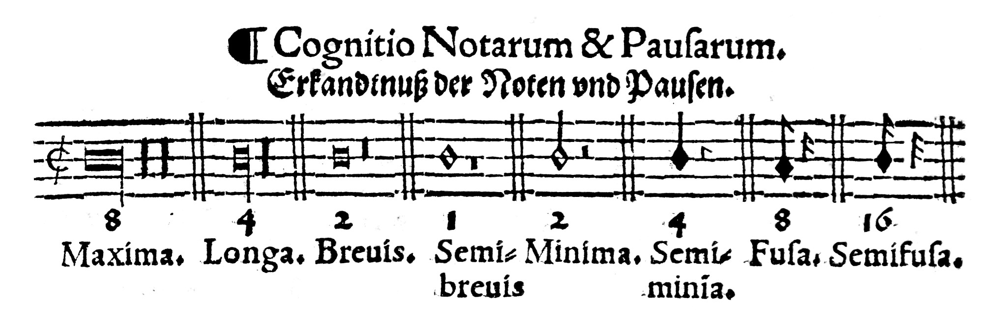
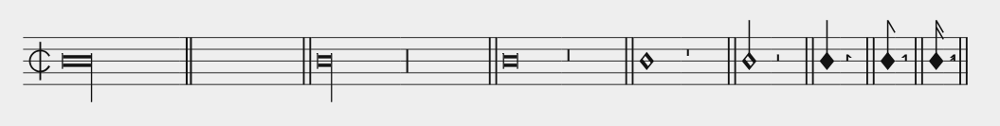
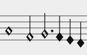

Mensural notation has its own terminology for note values, and the names (and shapes) even differ slightly between white and black mensural notation. This excerpt from Salminger's Gradatio provides a succint overview of white mensural notation for us:

Both note and rest values are shown, together with a count in the current mensura (i.e. roughly the meter), and the respective names. In mensural MEI, these names are used in a <note>'s or <rest>'s duration attribute, dur. This is how we transcribe Salminger's overview into MEI (slightly simplified to reduce clutter):

<staff n="1">
<layer n="1">
<note dur="maxima" /> <rest dur="maxima" /> <barLine form="dbl" />
<note dur="longa" /> <rest dur="longa" /> <barLine form="dbl" />
<note dur="brevis" /> <rest dur="brevis" /> <barLine form="dbl" />
<note dur="semibrevis" /> <rest dur="semibrevis" /> <barLine form="dbl" />
<note dur="minima" /> <rest dur="minima" /> <barLine form="dbl" />
<note dur="semiminima" /> <rest dur="semiminima" /> <barLine form="dbl" />
<note dur="fusa" /> <rest dur="fusa" /> <barLine form="dbl" />
<note dur="semifusa" /> <rest dur="semifusa" /> <barLine form="dbl" />
</layer>
</staff>
If you look closely, you will notice an error in Verovio's rendering of the maxima rest. It is correctly shown as a double vertical bar, but spans five lines instead of two (which it should in this mensura). This problem is tracked by the Verovio developers already, and will be fixed in a future version.
Before we move on, let's look at a snippet from our example piece quickly. This shows you a few mensural note values in actions.

Of course, we not only encode the note durations, but also the pitches and dots! (Don't get confused seeing the first note, g, above instead of on the second staff line. The current clef here puts c on the fourth line.)
<note dur="semibrevis" pname="g" oct="3"/> <note dur="minima" pname="e" oct="3"/> <note dur="minima" pname="f" oct="3" dots.ges="1"/><dot /> <note dur="semiminima" pname="e" oct="3"/> <note dur="semiminima" pname="d" oct="3"/> <note dur="semiminima" pname="c" oct="3"/>